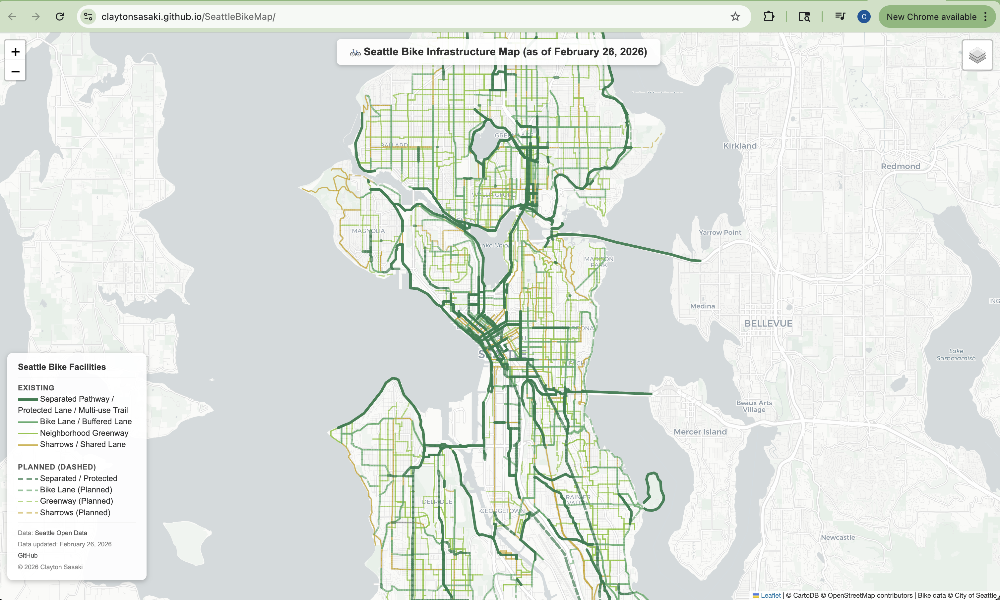
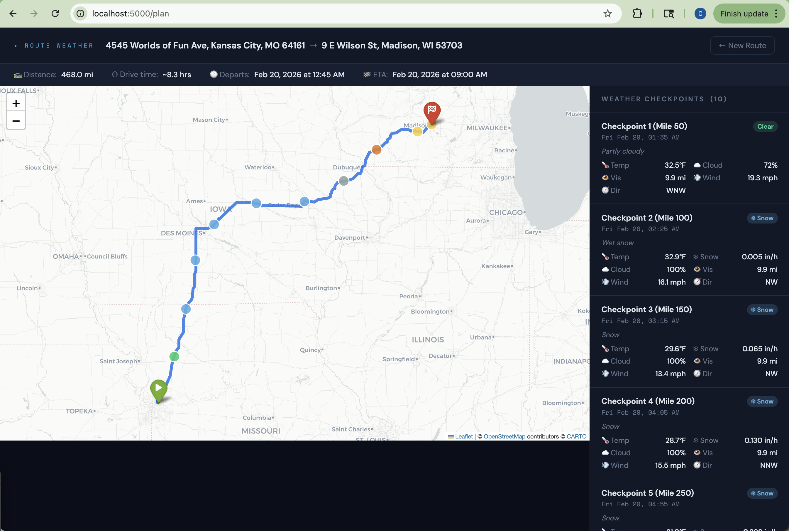
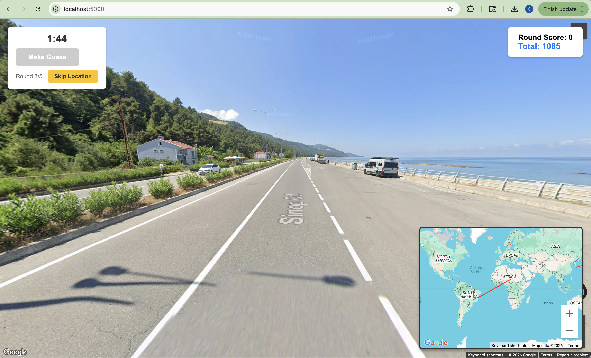
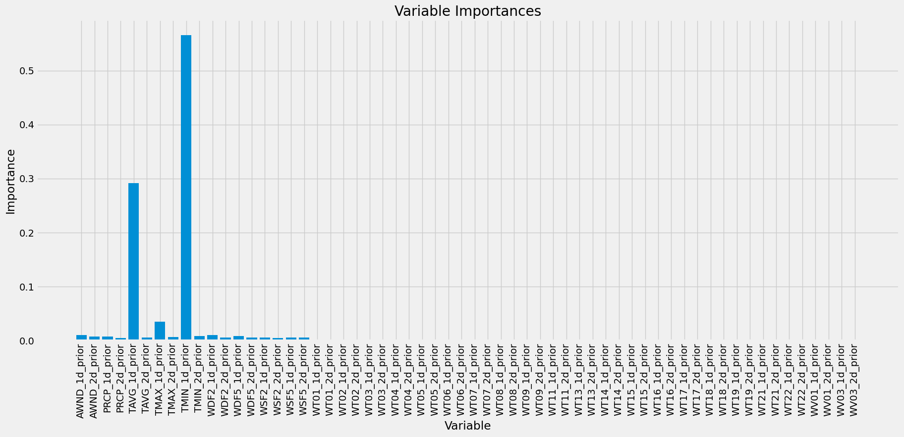
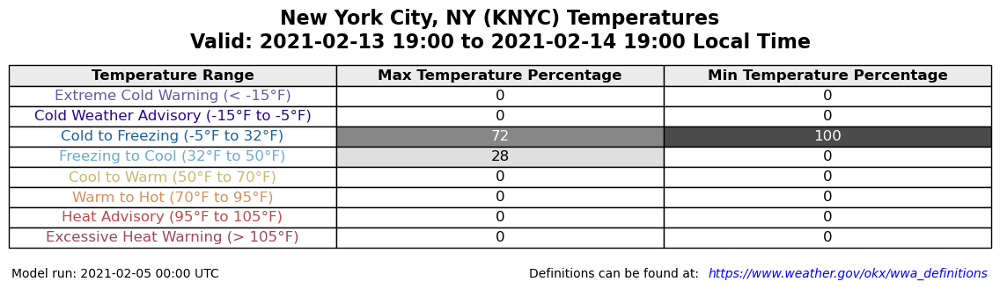
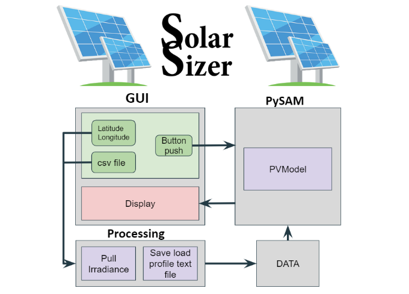

Projects
A collection of my software projects and tools. Click on a project title for a live demo or publication link (where available), or use the GitHub link to view the source code.

SeattleBikeMap
An interactive map of Seattle's bike infrastructure, styled after the official Seattle 2025 Bike Map, but including planned bike facilities.

Route Weather Planner
A Flask web app that shows weather forecasts at regular intervals along a driving route. Uses a start address, end address, and departure time to produce an interactive map showing weather conditions at set checkpoints, based on when you'll arrive there.

WRF Upscale Growth Paper
Code for my final PhD paper (Sasaki et al. 2026): Environmental Influences on Deep Convective Upscale Growth Rate in Central Argentina from a Convection-Permitting Simulation. Journal of Geophysical Research: Atmospheres.

MapGuess
A simple web-based location guessing game, built with Python Flask and Google Maps API. Explore random locations from around the world, make your guesses, and see how well you can read local clues!

SeattleTempPredict RandomForest
A simple implementation of a random forest to predict Seattle's temperature for the next day using 25 years worth of single station data.

GEFS_plot
Creates graphics to aid in decision-support and risk communication using forecasts from the Global Ensemble Forecast System (GEFS).
